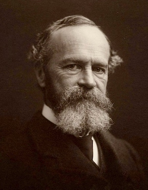

Historia badań nad emocjami
Emocje w filozofii
- Emocje od zawsze przedmiotem refleksji filozofów
- Platon, Arystoteles, Seneka, Tomasz z Akwinu, Kartezjusz, Spinoza, Hume
- Często problem emocji ma związek z esencjalizmem
Esencjalizm
- Pogląd stary jak filozofia antyczna
- Platon - wszystkie rzeczy mają swoje idealne formy. Prawdziwe obiekty w świecie jedynie odzwierciedlają te perfekcyjne formy.
- Esencjalizm ma bardzo poważne reperkusje dla wielu dziedzin nauki (np. istota gatunków w biologii, specjalizacja czynnościowa części mózgu w neuronauce itd.)
- Esencjalizm w odniesieniu do emocji zakłada, że różne emocje mają swoje uniwersalne, idealne esencje, zrozumiałe dla każdego człowieka
Rydwan, konie i Platon
Rydwan, konie i Platon
- Rydwan - rozsądek, rozum
- Biały koń - duch
- Czarny koń - popędy, emocje
Teorie emocji - historia nowożytna
- Jamesa-Langego
- Cannona-Barda
- Teoria dwuczynnikowa (Schachter i Singer)
Teoria Jamesa-Langego
 
Teoria Jamesa-Langego
- Koniec XIX wieku
- Fizjologiczna reakcja pobudzenia jest pierwotna
- Emocje są konsekwencją odczuwania zmian fizjologicznych
- Różne wzorce zmian fizjologicznych powodują różne emocje
Teoria J-L i niedźwiedzie
- Człowiek widzi niedźwiedzia w lesie…
- …ma fizjologiczną reakcję na niedźwiedzia…
- …interpretuje tą reakcję jako emocję…
- …i ucieka!
Rozwój teorii J-L
- Na przestrzeni ponad stu lat teoria J-L miała wiele form i wersji
- Np. Jamesowi przypisuje się twierdzenie, że każda kategoria emocji (gniew, strach, radość, etc.) jest powiązana z odmiennym stanem fizjologicznym
- Wg. LFB James był w rzeczywistości przeciwny temu twierdzeniu - uważał, że każda instancja emocji może mieć swój wzorzec fizjologiczny
- Nieporozumienie powstało wskutek sposobu, w jaki o teorii J-L pisał niejaki John Dewey na poczatku XX wieku
Teoria Cannona-Barda
- Walter Cannon (1871–1945) fizjolog z Harvard University (przy okazji twórcja pojęcia homeostaza), oraz jego uczeń, Philip Bard (1898–1977)
- Zewnętrzny bodziec aktywuje receptory (np. dotyku), które są przewodzone do kory mózgowej
- Na podstawie analizy dokonywanej w korze aktywowane są wzorce ekspresji emocjonalnej
Teoria Cannona-Barda
- Ta aktywacja dokonuje się we wzgórzu (thalamus)
- Różne emocje charakteryzują się różną ekspresją, ponieważ mają różne wzorce aktywacji wzgórza (w tym sensie mają swoje esencje)
- Ekspresja emocji dzieje się jednocześnie z innymi zmianami fizjologicznymi (nie jest konsekwencją pobudzenia jak w teorii J-L)
Co robi wzgórze?
- “Centrala telefoniczna” - przekazuje informacje sensoryczne z obwodu do kory mózgowej
- Reguluje też kwestie związane ze spaniem/czuwaniem
- Postuluje się rolę wzgórze w podtrzymywaniu przytomności
Eksperyment Schachtera i Singera
- Gr.1 -> adrenalina + informacje o jej działaniu
- Gr.2 -> adrenalina + brak info o jej działaniu
- Gr.3 -> adrenalina + nieprawdziwe informacje
- Gr.4 -> placebo
Eksperyment Sch-S - manipulacje
- Grupa euforii
- Grupa gniewu
Eksperyment Sch-S - wyniki
- Euforyczność w warunku euforii (od najwyższej do najniższej): adr-misinformed, adr-ignorant, placebo, adr-informed.
- Gniew w warunku gniewu (najwyższy do najniższego): adr-ignorant, placebo, adr-informed.
Teoria dwuczynnikowa Schachtera i Singera
Emocje są wynikiem: 1. Pobudzenia 2. Etykiety opisującej to pobudzenie w danej sytuacji
Teoria dwuczynnikowa Schachtera i Singera
- Pobudzenie zawsze poprzedza emocję
- Źródłem pobudzenia może być wszystko
- To samo pobudzenie może być etykietowane różnie, w zależności od oceny